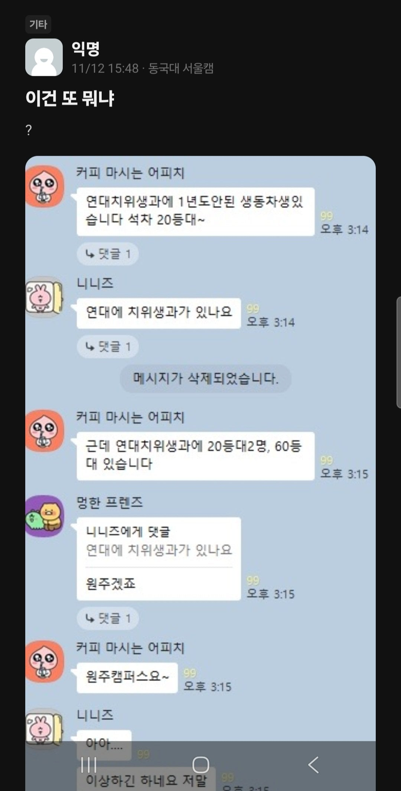
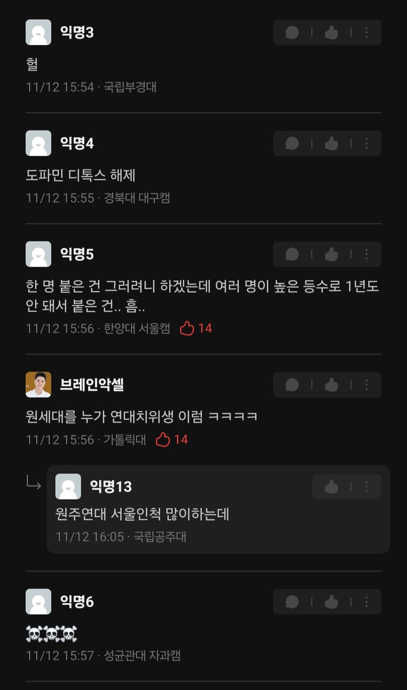

연세대 원주캠 치위생과에서 세무사 1년미만 공부 동차 합격자 괴물 올해 3명등장
두명은 20등대 한명은 60등대로 초고수. ㄷㄷ
무려 지방대 치위생과에서 괴물이 한시험에 3명이나 아주 우연히 떡! 등장한거임 ㄷㄷ


연세대 원주캠 치위생과에서 세무사 1년미만 공부 동차 합격자 괴물 올해 3명등장
두명은 20등대 한명은 60등대로 초고수. ㄷㄷ
무려 지방대 치위생과에서 괴물이 한시험에 3명이나 아주 우연히 떡! 등장한거임 ㄷㄷ
그래서 중국은 emp를...
저 이슈를 하루 종일 보고 있으니깐 솔직하게 안하는 내가 바보더라
어차피 60점 넘기는 시험이고 실제 세무사 해보고 어렵다? 걍 그만 두면 됨
뭐 날리는 시간도 없어서 아깝지도 않음
솔직히 준비시간? 진짜 넉넉잡아 안경 사용법 연습 일주일 정도?
시험보다가 걸렸다? 걍 세무사 3년 시험 금지만 받음
어차피 빡세게 공부도 안 했는데 다른 전문직 도전하면 됨
진짜 로우리스크 하이리턴임
아직 기회는 있다. 이 새끼들 일처리 형편 없어서 대책 세우는데 1년은 걸릴 듯
안경사서 달려라 혹시모른다ㅋㅋㅋㅋ
시험장에서 이제 안경은 무조건 전자렌지로 한번 구웠다 써야겠네.
풀지 말라고 만든 문제를 만점 받으면 진짜 머리가..;;
와 풀악셀 밟아도 되는건가요?
이러면 걸림
이슈되서 경찰에서 5일안에 조사들어간다고 본다
구매내역하고 공부한거 찾아서 조지는방향으로 갈껄
무슨무슨죄로 수사할건데ㅋㅋ 이미 끝난시험에서 의심스럽다고 개인 구매내역조지면서 수사하는건 말이안됨
공무집행방해? 공적인 시험이니까
그니까 시험 중간에 잡았으면 수사 하겠지 그런데 이미 시험은 끝났고 점수가 높다는이유로 수사를하는게 말이되냐고
정황으로 피의자가 아닌 참고인으로 불러서 수사는 가능해. 거기서 피의자로 입건할 증거를 어떻게 찾을지는 수사관 역량이고
말이됨? 중범죄도 아니고 정황만으로 그것도 점수가 높다는걸로 소환을 한다고?
참고인 조사야 원래할 수 있는건데; 참고인조사 자체를 못하면 모든 수사를 못하는데? 피의자부터는 강제로 집뒤지고 pc뒤지고 개인정보 뒤지는는거고
그러니까 애초에 수사가 시작되는거자체가 말이되냐는거야 무슨죄로 수사를 시작할건데 아무 증거도 없는 심증뿐인 컨닝을 가지고 수사를 시작한다? 그러면 내가 길가는사람 붙잡고 내돈훔쳤다고 우기면 수사가시작됨? 상대방은 참고인조사라도 받아야하고?
봤음?
빠릿빠릿한 새끼들이네
저런식이면 관련 지식 거의 없는상태에서 전문직 자격증만 걸어놓고 딴 사람 일시킨다는거잖아 극혐이네
사무장만 잘 두면 끝
ㅈㄴ빠릿하게 나쁜짓했네
어차피 실무도 ai가 하니까 영업만 잘하면될듯
시험이 쉬웠어요 헤헷
니들 치위생사 무시하냐 서울대보다 똑똑할수도 잇지 왜그래
치의예과가 아니야.....
ai 선도하는 나라가 맞긴 해 벌써 문제점이 나오잖아 ㅋㅋㅋㅋㅋㅋㅋ
너무 똑똑한데 실행력까지 좋은 문제아 새끼들 ㅋㅋㅋㅋㅋㅋ